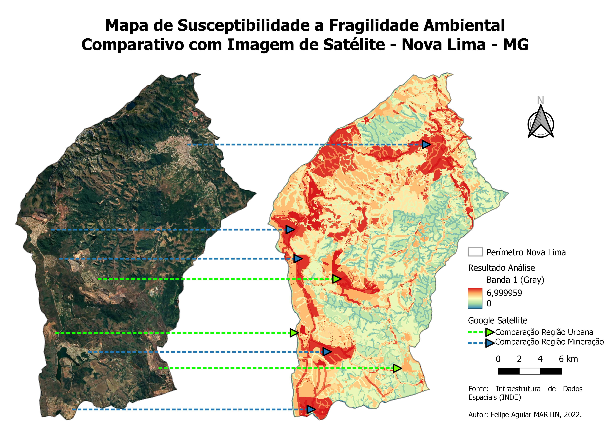
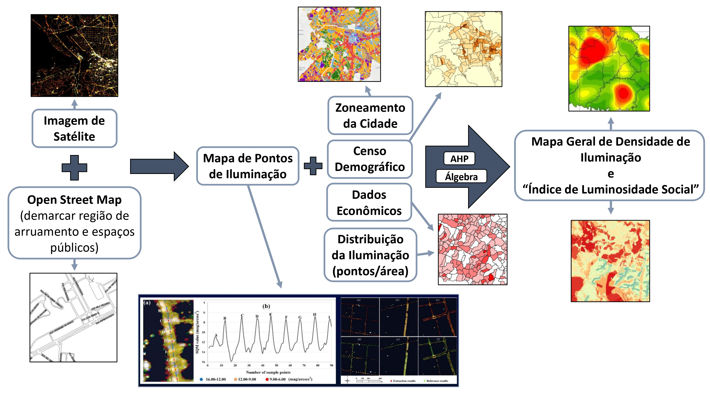
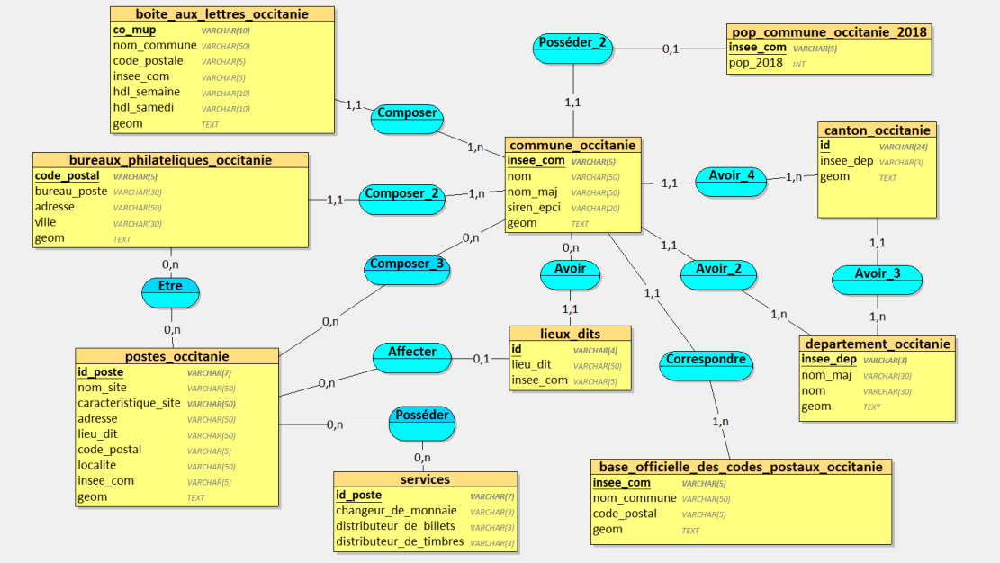
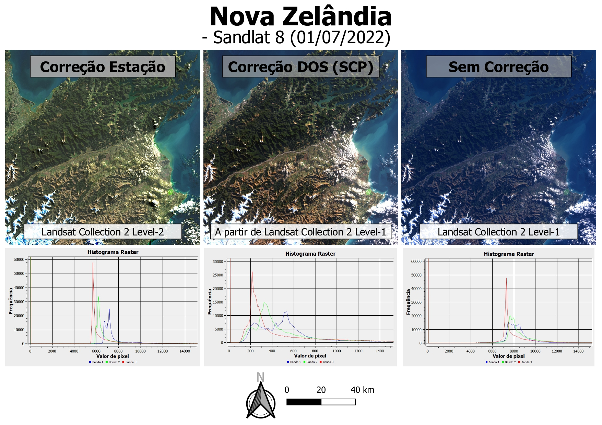
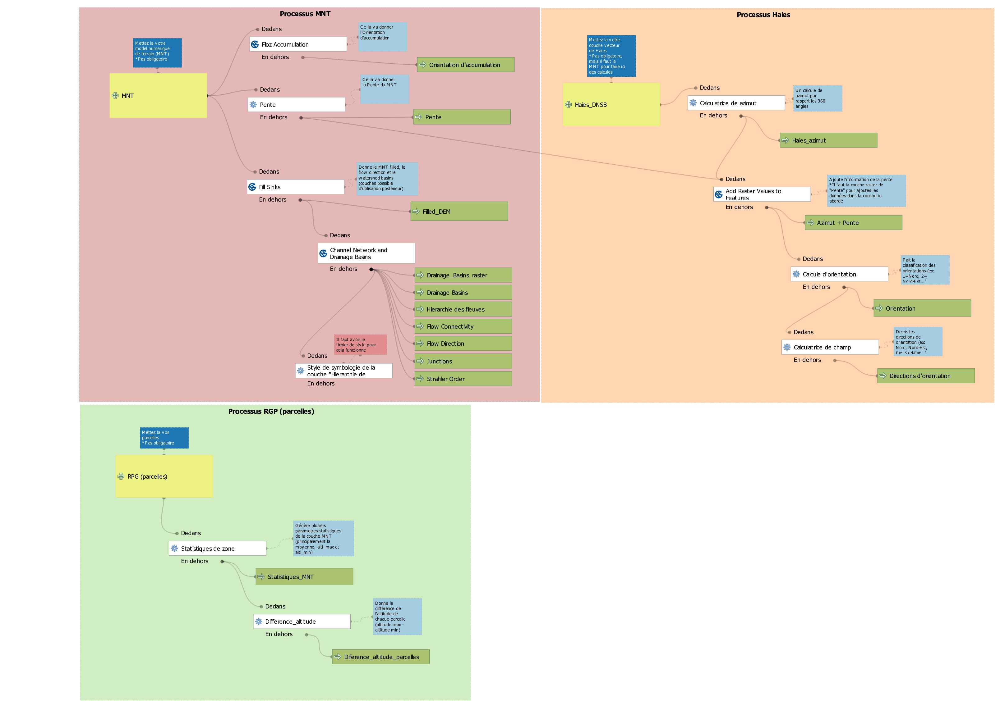
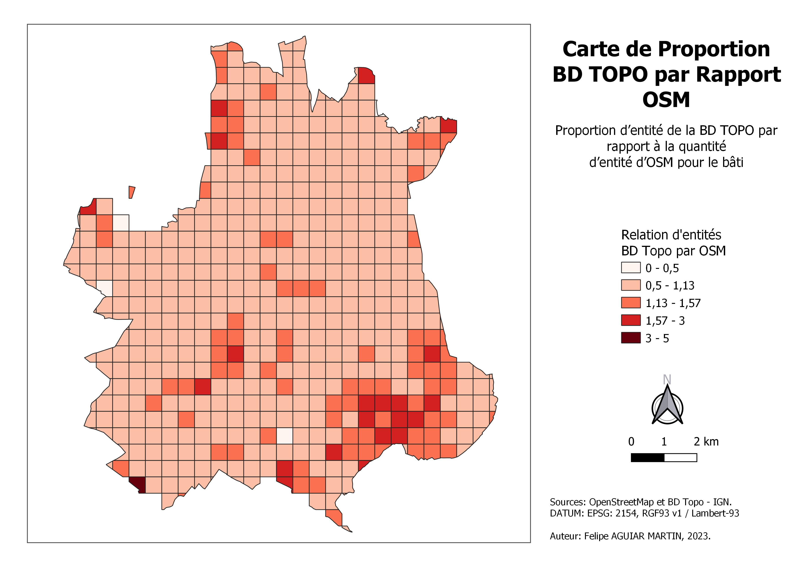
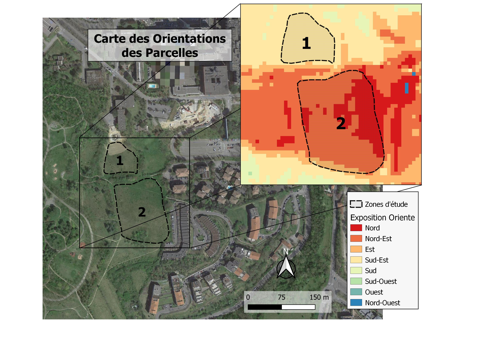
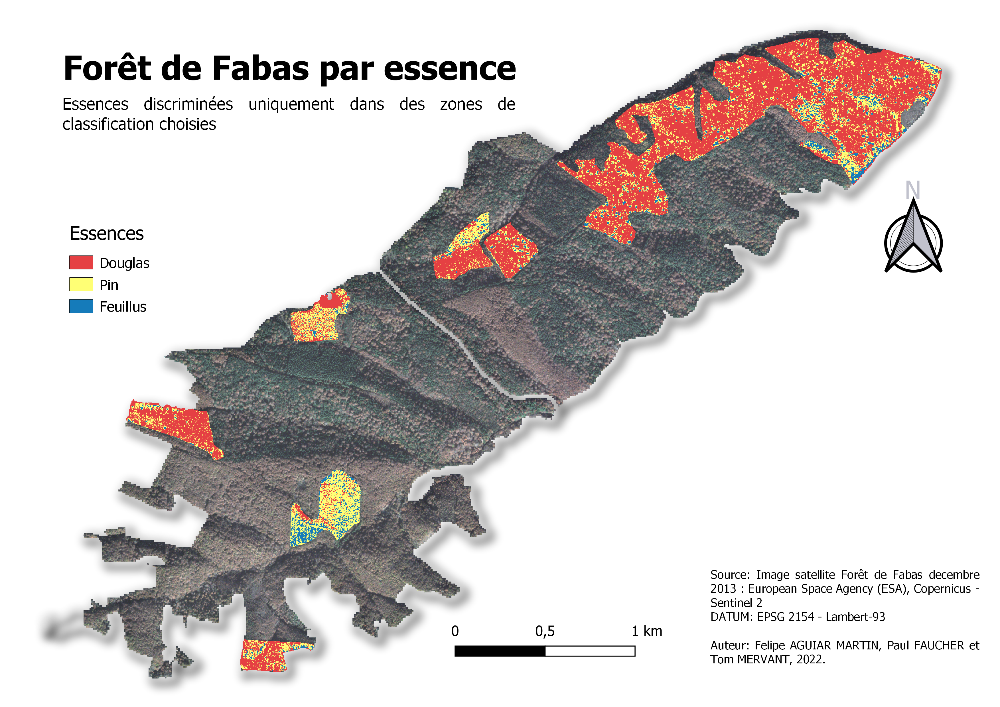
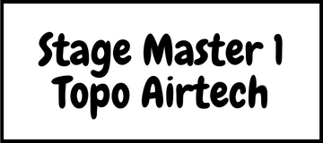
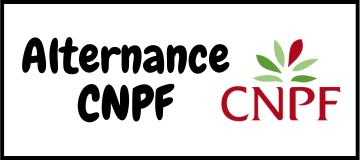

Mon mail: felipeagmt96@gmail.com
Mon mail: felipeagmt96@gmail.com
Pour la télédétection de l'agriculture, forêt et l'environnement
Origine:
• Né à São Paulo et habitant à Curitiba (Brésil)
Indirectement exposé à la géomatique depuis toujours grâce au contexte familial. Appliqué à la télédétection.
Formations:
• Licence Biologie - Université Federal du Paraná (Curitiba, BR)
• Spécialisation Géotraitement - PUC Minas IEC (Minas Gerais, BR)
• Master Géomatique - Université de Toulouse (Toulouse, FR)
Biologiste géomètre d'origine brésilienne et nationalité française, résidant en France depuis 2022.
Enthousiaste de la télédétection appliquée à l'agriculture, forêt et à l'environnement.
Quelques projets développés.
         L'envoi automatique est en cours de maintenance. Veuillez cliquer sur le lien "Mon mail".
Mon mail: felipeagmt96@gmail.com
 Facebook
Facebook LinkedIn
LinkedIn